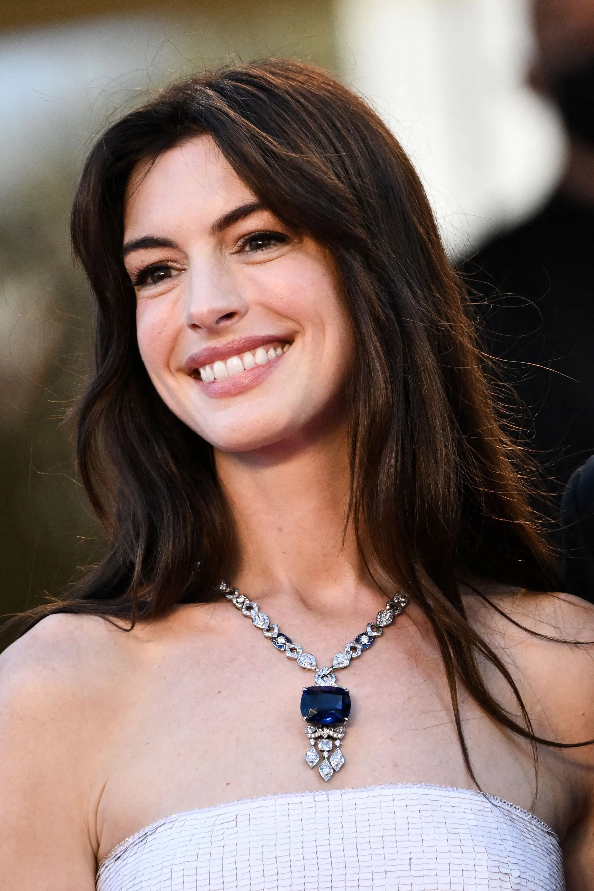
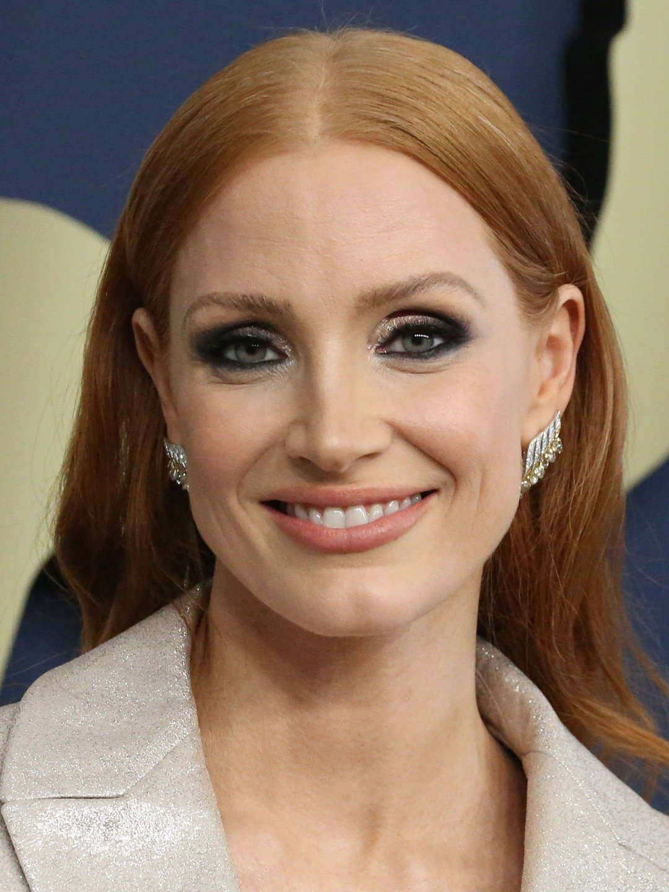
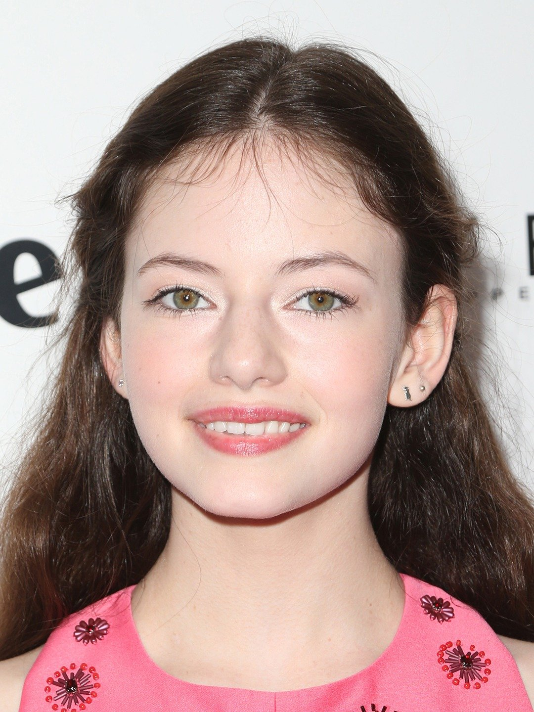
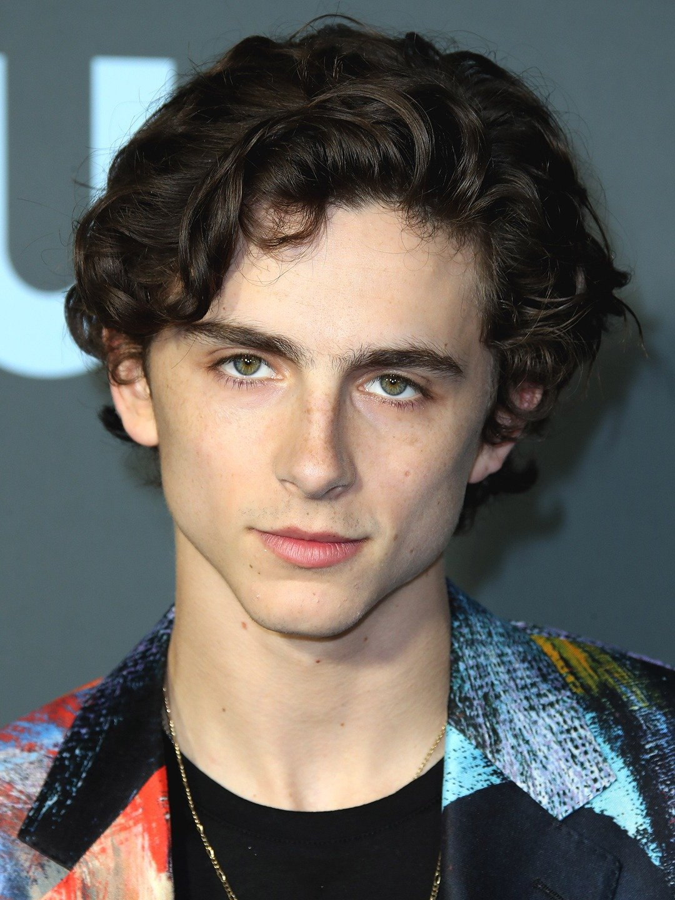
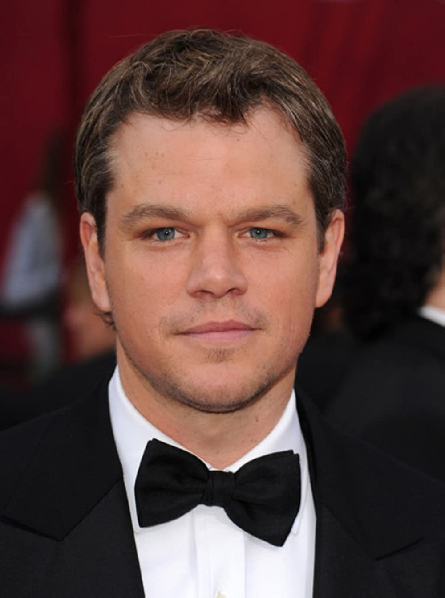
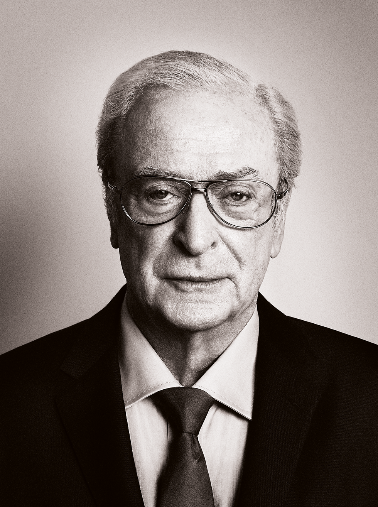

Matthew David McConaughey (/məˈkɒnəheɪ/ mə-KON-ə-hay; born November 4, 1969) is an American actor. He had his breakout role with a supporting performance in the coming-of-age comedy Dazed and Confused (1993). After a number of supporting roles, his first success as a leading man came in the legal drama A Time to Kill (1996). His career progressed with lead roles in the science fiction film Contact (1997), the historical drama Amistad (1997), and the war film U-571 (2000).
Interstellar (Cast)

Matthew McConaughey
Joseph Cooper

Anne Hathaway
Amelia Brand
Anne Jacqueline Hathaway (born November 12, 1982) is an American actress. The recipient of various accolades, including an Academy Award, a British Academy Film Award, a Golden Globe Award, and a Primetime Emmy Award, she was among the world's highest-paid actresses in 2015. Her films have grossed over $6.8 billion worldwide, and she appeared on the Forbes Celebrity 100 list in 2009.

Jessica Chastain
Murph
Jessica Michelle Chastain (born March 24, 1977) is an American actress and producer. Known for primarily starring in projects with feminist themes, she has received various accolades, including an Academy Award and a Golden Globe Award. Time magazine named her one of the 100 most influential people in the world in 2012.

Mackenzie Foy
Murph (Young)
Mackenzie Christine Foy (born November 10, 2000) is an American actress and model. She is known for portraying Renesmee Cullen in the 2012 film The Twilight Saga: Breaking Dawn – Part 2, which earned her a Young Artist Award nomination as Best Supporting Young Actress in a Feature Film. She portrayed young Murphy in the 2014 space epic Interstellar, for which she received a Saturn Award for Best Performance by a Younger Actor among other awards nominations. She starred as Clara in Disney's 2018 film The Nutcracker and the Four Realms.

Timothee Chalamet
Tom
Timothée Hal Chalamet (born December 27, 1995) is an American actor. He has received various accolades, including nominations for an Academy Award, two Golden Globe Awards, and three BAFTA Film Awards.

Matt Damon
Hugh Mann
Matthew Paige Damon (born October 8, 1970) is an American actor, film producer, and screenwriter. Ranked among Forbes' most bankable stars, the films in which he has appeared have collectively earned over $3.88 billion at the North American box office, making him one of the highest-grossing actors of all time. He has received various awards and nominations, including an Academy Award and two Golden Globe Awards, in addition to nominations for three British Academy Film Awards and seven Primetime Emmy Awards.

Michael Caine
Professor Brand
Sir Michael Caine CBE (born Maurice Joseph Micklewhite; 14 March 1933) is an English actor. Known for his distinctive South London accent, he has appeared in more than 160 films in a career spanning seven decades and is considered a British film icon. He has received various awards including two Academy Awards, a BAFTA, three Golden Globe Awards, and a Screen Actors Guild Award. As of 2017, the films in which Caine has appeared have grossed over $7.8 billion worldwide. Caine is one of only five male actors to be nominated for an Academy Award for acting in five different decades. In 2000, he received a BAFTA Fellowship and was knighted by Queen Elizabeth II for his contribution to cinema.